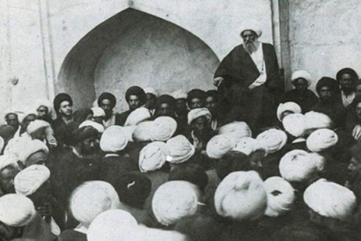

Welcome to the Shii Studies Network
The Shii Studies Network aims to enable space for graduate students researching Shiism in all its diversity to build professional and personal relationships, share their work, and learn from those further along in the field.

Source: Library of Congress, African and Middle East Division, Near East Section Persian Manuscript Collection.
Upcoming Events

The Study of the Shiʿi Marjaʿiyya: From Above, From Below, and the Networks In-Between
Reflections on Shiʿi Studies Lecture Series
10 December 2025
Shii Studies Seminars II: Mahboobeh Hami
15 December 2025
Making Shiʿism “Matter”: Bringing Material and Sensory Cultures to the Study of Shiʿism
Reflections on Shiʿi Studies Lecture Series
12 January 2026